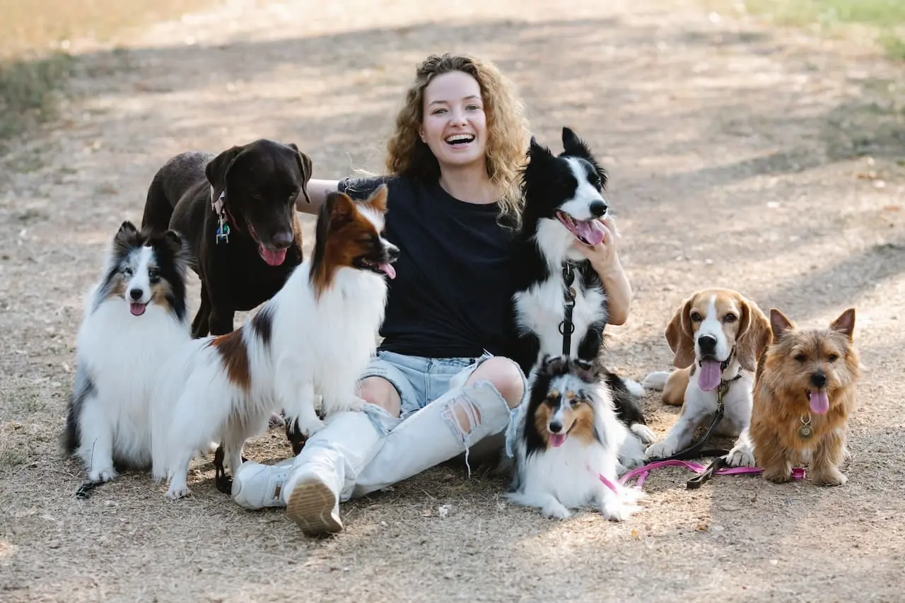
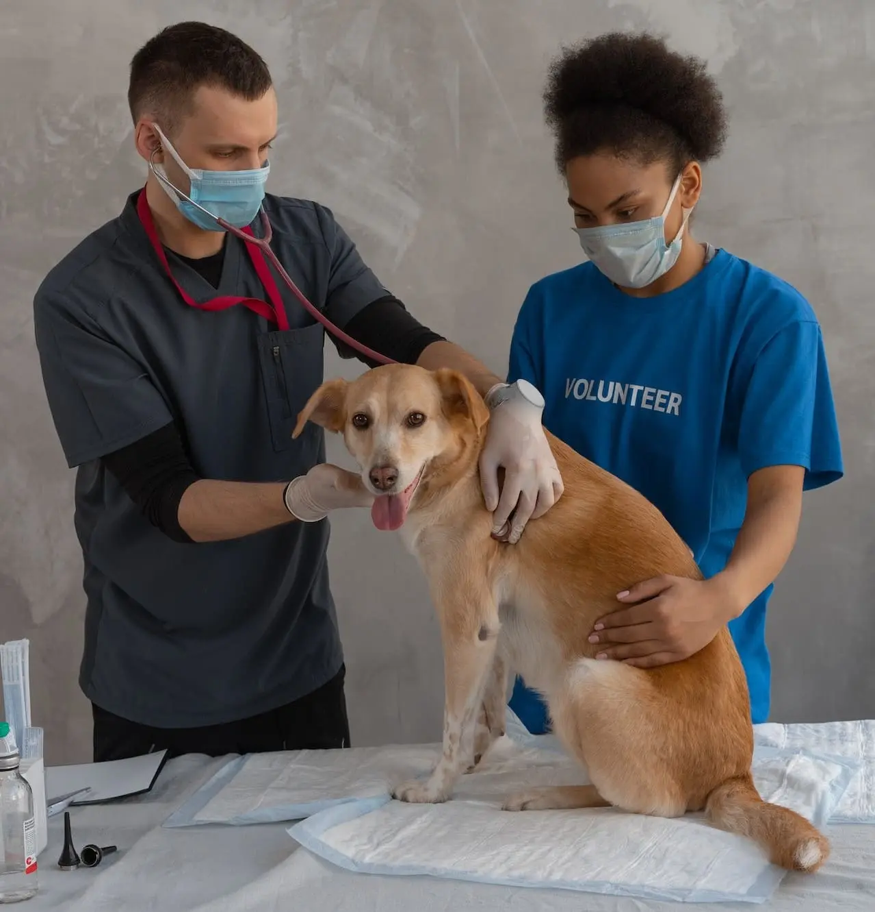

LOS PERROS LLENAN NUESTRAS VIDAS DE ALEGRÍA ES HORA DE DEVOLVERLES EL FAVOR
GUREUM nació una tarde de domingo en un parque en San Antonio de Areco con la única idea de crear un lugar lleno de amor y pensando en los deseos y necesidades de los perros y sus familias. Ofrecemos todo lo que su amigo peludo necesita, desde una guardería canina, alojamiento nocturno, de fin de semana o festivo, y servicios de peluquería/spa.
Estamos ubicados frente a la costanera de Areco, donde contamos con un grande parque con mucho espacio para jugar al aire libre y también con amplias salas internas en la casa diseñadas con colores cálidos y ambientada con música relajante para que cada uno de nuestros huéspedes se puedan sentir como en su hogar.
Nuestro staff está formado por profesionales que querrán y cuidarán a su perro como si fuera propio. Puede estar seguro que su perro volverá a casa encantado e incluso agotado de toda la emoción del día.
Nuestros servicios
Guarderia:
¿Estás ocupado pero no quieres que tu cachorro se sienta solo?. Lo entendemos perfectamente y por eso ofrecemos una guardería canina, donde su cachorro puede corretear con otros perros mientras está al cuidado de staff altamente calificado.
Hospedaje:
Somos la perfecta opción de alojamiento canino para que esté tranquilo que su perro está en un lugar repleto de cuidado y amor como si fuera usted.
Spa/Peluqueria:
Deja en nuestras manos el trabajo y podrás acurrucarte con un cachorro reluciente de limpio, muy perfumado y feliz cuando llegues a casa
Nuestro Staff
En GUREUM somos una raza única. Amamos y cuidamos a tu cachorro como si fuera de nuestra propia familia, y somos tu aldea de conocimiento para criar un perro feliz y sano. Nuestro compromiso con usted es que su cachorro siempre estará en buenas manos con nosotros.
Nuestros expertos ofrecen abundante información sobre salud, seguridad, nutrición y comportamiento canino. GUREUM emplea a un biólogo medioambiental y a un científico veterinario para garantizar el máximo nivel de seguridad.
